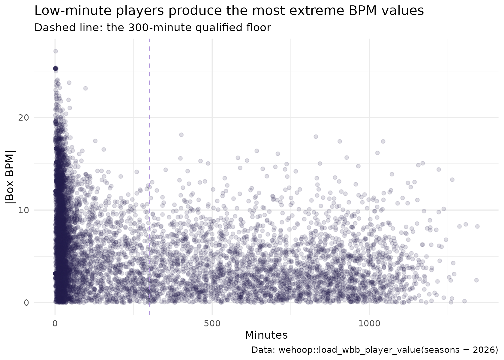

Women's College Basketball Player Value: Box Plus-Minus Model
Saiem Gilani
Source:vignettes/articles/womens-college-basketball-player-value-model.Rmd
womens-college-basketball-player-value-model.RmdBox plus-minus (BPM) estimates a player’s contribution in
points per 100 possessions from her box score alone: scoring,
efficiency, usage, rebounding, assists, steals, blocks and
turnovers. It cannot see screens, spacing or defensive
positioning, but because box score rates settle quickly it is far more
stable than on/off measures at college sample sizes.
load_wbb_player_value() returns offensive, defensive and
total BPM for every Division I women’s player since 2014.
This article explains what the model estimates, how it is fitted, how it holds up, and how to use it responsibly. It condenses the official model card in the wehoop-wbb-data repository; numbers quoted from that card are labelled as such.
What the model estimates
| Column | Meaning |
|---|---|
box_obpm |
Offensive box plus-minus, points per 100 possessions above average |
box_dbpm |
Defensive box plus-minus |
box_bpm |
box_obpm + box_dbpm |
min |
Minutes played |
qualified |
TRUE when min >= 300, the floor below
which the estimates are mostly noise |
player_id, player, team_id,
season
|
Identifiers (ESPN ids) |
BPM and RAPM measure different things. RAPM (see the women’s college RAPM article) sees everything that happens while a player is on the court but needs many possessions. BPM sees only the box score but needs few. Treat them as cross-references, not substitutes.
Loading the ratings
The ratings are published as Parquet files, so
load_wbb_player_value() needs the arrow
package.
pv <- load_wbb_player_value(seasons = 2025:2026)
# Older release files predate the `qualified` flag; derive it the same way.
if (!"qualified" %in% names(pv)) pv$qualified <- pv$min >= 300
pv |> count(season, qualified)
#> # A tibble: 4 × 3
#> season qualified n
#> <int> <lgl> <int>
#> 1 2025 FALSE 4921
#> 2 2025 TRUE 2920
#> 3 2026 FALSE 5293
#> 4 2026 TRUE 3012Team names come from the box scores, joined on character ids:
team_names <- load_wbb_team_box(seasons = 2026) |>
transmute(team_id = as.character(team_id), team = team_location) |>
distinct(team_id, .keep_all = TRUE)
pv <- pv |>
mutate(team_id = as.character(team_id), player_id = as.character(player_id)) |>
left_join(team_names, by = "team_id")
pv |>
filter(season == 2026, qualified) |>
arrange(desc(box_bpm)) |>
select(player, team, min, box_obpm, box_dbpm, box_bpm) |>
mutate(across(where(is.double), ~ round(.x, 2))) |>
head(15)
#> # A tibble: 15 × 6
#> player team min box_obpm box_dbpm box_bpm
#> <chr> <chr> <dbl> <dbl> <dbl> <dbl>
#> 1 Jana El Alfy UConn 402 6.7 11.4 18.1
#> 2 Kyla Oldacre Texas 830 10.4 7.54 17.9
#> 3 Madina Okot South Carolina 906 10.6 6.86 17.4
#> 4 Sarah Strong UConn 1044 15.8 1.61 17.4
#> 5 ZaKiyah Johnson LSU 642 11.0 5.41 16.4
#> 6 Lauren Betts UCLA 1026 15.3 0.83 16.2
#> 7 Amiya Joyner LSU 709 8.22 7.86 16.1
#> 8 KK Arnold UConn 928 5.01 10.7 15.7
#> 9 Kate Koval LSU 582 8.37 7.27 15.6
#> 10 Anaya Hardy Louisville 399 9.09 6.49 15.6
#> 11 Grace Knox LSU 611 9.59 5.76 15.4
#> 12 Mir McLean Maryland 463 6.9 8.39 15.3
#> 13 Kiki Rice UCLA 1170 10.8 4.21 15.0
#> 14 Teya Sidberry Texas 487 5.33 9.7 15.0
#> 15 Raegan Beers Oklahoma 843 13.3 1.7 15.0Data
As reported in the model card, the inputs are the published player
and team season statistics for women’s college basketball, and the team
ratings from load_wbb_ratings(). Coverage starts in 2014,
the first season with box score inputs of sufficient quality. The model
is recomputed from the current published data on every run, so upstream
corrections flow through on the next publish.
How the model works
- Per-100 features. Each player’s box score is converted to rates per 100 possessions and shares: points, assists and rebounds per 100, usage, true shooting and effective field goal percentage, turnover, steal, block, assist and rebound percentages, free throw rate, and shot-location shares.
- Standardize. Each feature is centered and scaled (and clipped at 4 standard deviations, as reported in the card).
- Score. Separate ridge regressions for offense and defense, fitted at the team level, turn the standardized features into raw offensive and defensive scores.
- Team adjustment. A uniform adjustment per team makes the team’s minutes-weighted player scores add up to its adjusted efficiency margin from the team ratings model. This is what anchors BPM to winning.
As reported in the model card, the current coefficients were fitted on the 2025 and 2026 seasons with a ridge penalty of 3.0 for both offense and defense and a 150-minute floor for the team-sum weights. Because every feature is standardized, a slope is the BPM change for a one-standard-deviation move in that feature. The largest weights in the card:
| Feature | Offense slope | Defense slope |
|---|---|---|
| Points per 100 | 6.932 | -5.442 |
| Usage | -4.567 | 2.661 |
| True shooting % | -0.358 | 1.818 |
| Rebounds per 100 | 0.025 | 1.312 |
| Assists per 100 | 1.112 | -0.877 |
| Turnover % | -0.183 | -0.908 |
The scoring group (points, usage, shooting) carries most of the
offensive weight, and the defensive slopes mirror it with flipped signs.
That is the team constraint at work: offense and defense must add up to
one team rating, so a feature that buys offense is charged against
defense. Rebounding and steals are the clearly defensive contributors.
The card reports that the coefficient vector is published alongside the
release as wbb_player_value_coefficients.json.
How well does it work?
The minutes funnel: why the qualified flag exists
The published file keeps every player, including those with a handful of minutes. With no shrinkage, the most extreme values belong to the smallest samples:
pv_2026 <- pv |> filter(season == 2026)
ggplot(pv_2026, aes(min, abs(box_bpm))) +
geom_point(alpha = 0.15, color = "#221A4D") +
geom_vline(xintercept = 300, linetype = "dashed", color = "#b298dc") +
labs(
title = "Low-minute players produce the most extreme BPM values",
subtitle = "Dashed line: the 300-minute qualified floor",
x = "Minutes", y = "|Box BPM|",
caption = "Data: wehoop::load_wbb_player_value(seasons = 2026)"
) +
theme_minimal()
pv_2026 |>
mutate(minutes_bin = cut(min, c(0, 50, 100, 200, 300, 600, 800, Inf),
include.lowest = TRUE, right = FALSE)) |>
group_by(minutes_bin) |>
summarise(players = n(), sd_box_bpm = sd(box_bpm, na.rm = TRUE), .groups = "drop")
#> # A tibble: 7 × 3
#> minutes_bin players sd_box_bpm
#> <fct> <int> <dbl>
#> 1 [0,50) 3825 7.38
#> 2 [50,100) 558 6.18
#> 3 [100,200) 509 5.59
#> 4 [200,300) 401 5.04
#> 5 [300,600) 1085 5.01
#> 6 [600,800) 745 4.71
#> 7 [800,Inf] 1182 4.86The spread of BPM shrinks as minutes rise and levels off. As reported
in the model card, the 300-minute floor is the first bin whose spread
sits within 2% of the plateau reached at 600 to 800 minutes, measured
over all published seasons. Filter on qualified before
ranking or comparing players.
Is it stable from season to season?
A box score model earns its place by persisting for returning players. Here is the correlation of BPM from 2025 to 2026 for players qualified in both seasons:
yoy <- pv |>
filter(qualified) |>
select(player_id, season, box_bpm) |>
tidyr::pivot_wider(names_from = season, values_from = box_bpm,
names_prefix = "bpm_", values_fn = mean) |>
filter(!is.na(bpm_2025), !is.na(bpm_2026))
yoy |> summarise(players = n(), yoy_correlation = cor(bpm_2025, bpm_2026))
#> # A tibble: 1 × 2
#> players yoy_correlation
#> <int> <dbl>
#> 1 1533 0.813As reported in the model card, the same check pooled over every published season pair gives 0.818 over 14,608 player pairs.
Do offense and defense carry different information?
pv_2026 |>
filter(qualified) |>
summarise(players = n(), cor_obpm_dbpm = cor(box_obpm, box_dbpm))
#> # A tibble: 1 × 2
#> players cor_obpm_dbpm
#> <int> <dbl>
#> 1 3012 -0.0536A correlation near zero means the two components are not restating each other.
Reproducing it yourself
- Ratings:
load_wbb_player_value(seasons = ...)(needsarrow), 2014 onward. - Inputs:
load_wbb_player_box()for the box scores andload_wbb_ratings()for the team margins the adjustment uses. - Method and evaluation in full: the model card.
Limitations
- The box score is all it sees. Screening, help defense, spacing and defensive attention are invisible, which hurts defensive specialists and helps high-volume scorers.
-
No shrinkage. Low-minute values are unreliable; use
the
qualifiedflag. - Team-anchored. A player’s BPM inherits her team’s adjusted margin, so an error in the team rating moves the whole roster. As reported in the cards, the 2015 team ratings are missing, which leaves every 2015 player value empty.
- Not yet blended with RAPM. As reported in the card, a hybrid that uses BPM as a prior for RAPM is the planned next step.
Where to go next
- Women’s college RAPM: the on/off counterpart.
- Women’s college team ratings: the team margins BPM is anchored to.
- WNBA player impact: BPM, SPM and RAPM side by side for the WNBA.
- Advanced metrics: the per-100 rates and shooting percentages BPM is built from.
- Model dataset loaders in the function reference.